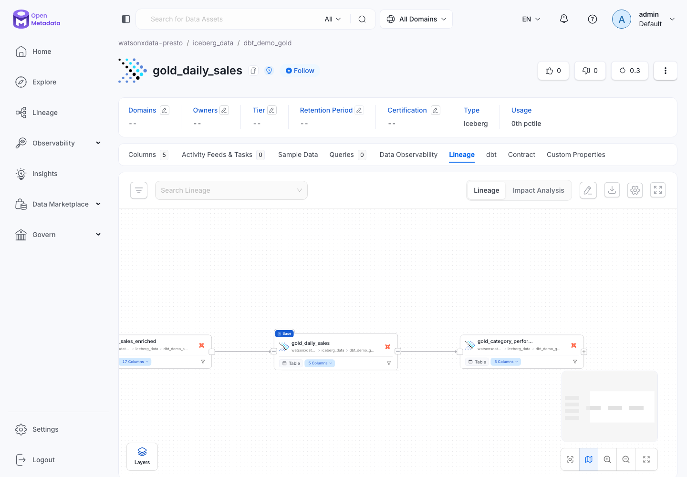

OpenMetadata: dbt Lineage in a Local Docker UI
What OpenMetadata does
OpenMetadata is a metadata catalog — think of it as a glossary and a map of your data all in one place. It answers three questions at a glance: where did each table come from (the lineage graph), what does each column mean (descriptions you wrote in schema.yml), and whether the data quality tests passed last time dbt ran. In this demo, OpenMetadata first tries a live Presto metadata scan so the catalog reflects the real watsonx.data tables. If that live connection fails, it falls back to the staged dbt artifacts and still builds the same catalog entities and lineage offline.
OpenMetadata is OPTIONAL in this demo
The medallion pipeline runs fine without it. The dbt and Spark paths build every gold table on their own. OpenMetadata is here only to visualise the lineage of what dbt already built. Skip it if you only want the pipeline; run it if you want to show where each number came from. For a live point-and-click BI view of the same gold tables, see Metabase instead — the two are complementary (Metabase queries the data; OpenMetadata maps where it came from).

What OpenMetadata Is
OpenMetadata is the catalog layer for this workshop. It answers catalog and governance questions that the warehouse itself does not answer well:
| Question | Where it appears |
|---|---|
| Which tables and columns exist? | Explore → Databases → watsonxdata-presto. |
| What does this field mean? | Column descriptions imported from dbt schema.yml. |
| Which layer is this table in? | MedallionLayer.Raw, Bronze, Silver, or Gold tags. |
| Is this a customer, product, order, PII, or financial field? | DemoDataDomain tags and glossary terms. |
| Which upstream tables feed this gold mart? | Lineage tab. |
| Did the dbt tests pass? | Data Quality tab from run_results.json. |
OpenMetadata is separate from the data engine. Presto still queries the Iceberg tables; OpenMetadata records the meaning, relationships, and governance context around those tables.
OpenMetadata versus OpenLineage
OpenMetadata is the catalog and UI. OpenLineage is an event standard that tools can emit while jobs run. This repo uses OpenMetadata directly from dbt artifacts today; OpenLineage explains how the same demo could later emit runtime lineage events from dbt, Spark, and Airflow into OpenMetadata or an enterprise catalog/lineage platform.
Architecture
flowchart LR
seeds["CSV seeds/"]
dbt["dbt models\nrunning against Presto"]
docs["dbt docs generate"]
live["live Presto metadata scan"]
fallback["offline table seed\nfrom catalog.json"]
artifacts["target/\nmanifest.json\ncatalog.json\nrun_results.json"]
ingest["metadata ingest CLI\nopenmetadata-ingestion"]
gov["governance pass\nglossary + tags"]
om["OpenMetadata server\nDocker on localhost:8585"]
browser["Browser\nlocalhost:8585"]
seeds --> dbt --> docs --> artifacts --> ingest
live --> ingest
artifacts --> fallback --> ingest
ingest --> gov --> om --> browserThe preferred path uses a live Presto metadata scan to create the table entities, then dbt artifacts attach lineage, descriptions, and test results. If Presto is unavailable, the offline fallback creates the same table entities from catalog.json, then the same dbt lineage and governance pass run.
Prerequisites
- Docker Desktop 4.x or later installed and running (the whale icon must be green).
- The project virtual environment activated:
source .venv/bin/activate - dbt models already built — complete at least through Step 5 (Build Models) in the dbt Demo Path.
Step 1: Start OpenMetadata
OpenMetadata needs three services running together: a MySQL database that stores all the catalog metadata, an Elasticsearch index that powers search, and the OpenMetadata web server itself. The official Docker Compose file bundles all three so you start them with a single command.
mkdir -p openmetadata
curl -fsSL \
"https://github.com/open-metadata/OpenMetadata/releases/download/1.13.0-release/docker-compose.yml" \
-o openmetadata/docker-compose.yml
docker compose -f openmetadata/docker-compose.yml up --detach
All-in-one entry point
OpenMetadata is also included in the repo-root docker-compose.yml, so it now runs under the same Compose project as Metabase and Airflow (ibmas-watsonxdata-dbt). From the repo root, docker compose up -d starts all three stacks together and docker compose down -v stops them. The -f openmetadata/docker-compose.yml command above still works for running OpenMetadata standalone — but if you start it that way, use scripts/reset_demo.sh --docker to tear it down cleanly.
After the containers start, wait for the web server to become ready. This command polls every 20 seconds and prints a confirmation when the API responds:
until curl -sf http://localhost:8585/api/v1/system/version; do
echo "waiting for OpenMetadata..."
sleep 20
done
First start downloads about 3 GB and takes 5–10 minutes
Docker needs to pull the MySQL, Elasticsearch, and OpenMetadata images the first time. Subsequent starts are fast because the images are cached locally.
Step 2: Generate dbt Artifacts
The three JSON files below are everything OpenMetadata needs. Run dbt docs generate to produce all three in one go:
| File | What it contains |
|---|---|
manifest.json |
The full dbt project graph — every model, source, test, and dependency. This is the file that drives the lineage diagram. |
catalog.json |
Column names and data types pulled from the live Presto warehouse schema. Gives OpenMetadata the column-level detail it shows in the table view. |
run_results.json |
Which tests passed and which failed on the last dbt run. This is what populates the Data Quality tab. |
Then copy the files to the directory the ingestion config expects:
cp target/manifest.json \
target/catalog.json \
target/run_results.json \
openmetadata/dbt-artifacts/
One-step lineage refresh
The two commands above (generate + stage) are bundled in a dedicated lineage-only script. When the medallion tables already exist and you just want fresh lineage, run:
It runs only dbt docs generate (no seed/run/test) and stages
manifest.json, catalog.json, and run_results.json into
openmetadata/dbt-artifacts/. For a full rebuild first, use
python scripts/prepare_openmetadata_dbt_artifacts.py instead.
If catalog.json is missing
catalog.json requires a live Presto connection because it queries the warehouse for column metadata. If Presto is unavailable, run dbt docs generate later and repeat the copy step. OpenMetadata can still show model lineage from manifest.json alone — it just shows fewer column details.
Step 3: Run the Ingestion Script
The ingestion script runs three passes: discover the real tables from Presto, fall back to offline dbt metadata if that fails, then attach dbt lineage and governance metadata.
The script does the following automatically:
- Installs
openmetadata-ingestion[dbt,presto]==1.13.0.0into the virtual environment. - Fetches a short-lived JWT token from the local OpenMetadata API.
- Renders
openmetadata/ingestion/metadata-ingestion.yamland tries a live Presto metadata scan. - If the live scan fails or
WXD_OM_SKIP_LIVE=1is set, runsscripts/seed_openmetadata_tables.pyto create the table entities from stagedcatalog.json. - Runs dbt ingestion from
openmetadata/ingestion/dbt-ingestion.yamlto attach dbt models, lineage edges, descriptions, and test results. - Runs
scripts/apply_openmetadata_governance.pyto apply glossary terms, classifications, fallback descriptions, and the online/offline ingestion-mode tag.
See OpenMetadata Glossary & Classification for the glossary terms, classifications, and auto-classification rules.
Step 4: Explore in the OpenMetadata UI
Open http://localhost:8585 in a browser and log in with:
- Email:
admin@open-metadata.org - Password:
admin
Email, not username
OpenMetadata uses email addresses as identifiers. The login form asks for an email, not a plain username — make sure to type the full address admin@open-metadata.org.
Follow these steps to reach the lineage graph:
- Click Explore in the left sidebar, then choose Databases.
- Find watsonxdata-presto and click into it, then open iceberg_data.
- Navigate to dbt_demo_gold → gold_daily_sales.
- Click the Lineage tab. The graph shows: raw CSVs → bronze tables →
silver_sales_enriched→gold_daily_sales. - Click any node in the graph to jump to that model's detail page.
- Click a column name inside a model card to see the description you wrote in
schema.yml— this is documentation-as-code made visible. - Click the Data Quality tab to see which dbt tests passed (shown in green) or failed (shown in red) from the last run.
- Open the Tags and Glossary Terms sections on a table or column to see the auto-applied medallion layer, domain, ingestion-mode, and business glossary labels.
See the full medallion chain at once
In the Lineage tab, click Expand All to see the complete Bronze → Silver → Gold chain with every intermediate model visible on screen at the same time.
Optional screenshot: dbt model with tests
Open a model such as silver_orders and use the Data Quality tab to show passed dbt tests.
Step 5: Stop OpenMetadata
When you are done with the demo, stop the containers:
To do a full reset and remove all stored metadata (useful before re-running the ingestion from scratch):
The -v flag removes the Docker volumes that hold the MySQL database and Elasticsearch index. After this, the next up will start with a completely empty catalog.
Configuration Reference
openmetadata/ingestion/dbt-ingestion.yaml
source:
type: dbt
serviceName: watsonxdata-presto
serviceConnection:
config:
type: Presto
hostPort: ibm-lh-lakehouse-presto651-presto-svc.apps.watson.ibmas-zocp-techcluster.org:443
catalog: iceberg_data
username: ibmlhadmin
sourceConfig:
config:
type: DBT
dbtConfigSource:
dbtConfigType: local
dbtCatalogFilePath: /Users/aseelert/GitHub/ibmas-watsonxdata-dbt/openmetadata/dbt-artifacts/catalog.json
dbtManifestFilePath: /Users/aseelert/GitHub/ibmas-watsonxdata-dbt/openmetadata/dbt-artifacts/manifest.json
dbtRunResultsFilePath: /Users/aseelert/GitHub/ibmas-watsonxdata-dbt/openmetadata/dbt-artifacts/run_results.json
sink:
type: metadata-rest
config: {}
workflowConfig:
openMetadataServerConfig:
hostPort: http://localhost:8585/api
authProvider: openmetadata
securityConfig:
jwtToken: __JWT_TOKEN__
| Section | Key | What it does |
|---|---|---|
source |
type: dbt |
Tells the ingestion CLI to use the dbt connector — not a direct database connector. |
source |
serviceName |
The name of the database service OpenMetadata groups these models under. Must match what the run script creates via the REST API. |
serviceConnection |
type: Presto |
Associates dbt models with a Presto database service so lineage links to real warehouse tables. |
dbtConfigSource |
dbtConfigType: local |
Reads artifact files from the local filesystem instead of S3, GCS, or Azure Blob. |
dbtConfigSource |
dbt*FilePath |
Absolute paths to the three JSON files copied from target/. |
workflowConfig |
hostPort |
The OpenMetadata API endpoint — matches the Docker Compose default port. |
workflowConfig |
jwtToken |
A short-lived token fetched at runtime by run-ingestion.sh — the placeholder __JWT_TOKEN__ is replaced by sed before the file is used. |
openmetadata/ingestion/metadata-ingestion.yaml
This is the live Presto metadata pass. It discovers the actual watsonx.data tables before dbt lineage is attached.
source:
type: presto
serviceName: watsonxdata-presto
serviceConnection:
config:
type: Presto
hostPort: __WXD_HOST__:__WXD_PORT__
catalog: __WXD_CATALOG__
username: __WXD_USER__
password: __WXD_API_KEY__
connectionArguments:
protocol: https
requests_kwargs:
verify: __WXD_CA_PEM__
sourceConfig:
config:
type: DatabaseMetadata
markDeletedTables: false
includeTables: true
includeViews: true
schemaFilterPattern:
includes:
- "^dbt_demo_raw$"
- "^dbt_demo_bronze$"
- "^dbt_demo_silver$"
- "^dbt_demo_gold$"
Set WXD_OM_SKIP_LIVE=1 when you want to force the offline dbt-artifact path.
Troubleshooting
Common issues
OpenMetadata not ready after 10 minutes
Check whether the server container is still starting or has crashed:
Look for INFO: Started server process near the bottom. If you see Java stack traces, wait another two minutes and check again — the JVM startup is the slowest part.
Package version mismatch during ingestion
The run-ingestion.sh script tries the pinned version 1.13.0.0 first. If that fails (for example because the package index no longer carries that exact build), install without a version pin:
Then rerun the ingestion script.
401 Unauthorized during ingestion
OpenMetadata issues short-lived JWT tokens. If you stopped and restarted the Docker containers, the old token is no longer valid. Simply rerun the script — it fetches a fresh token each time:
catalog.json is missing or empty
catalog.json is only produced by dbt docs generate, not by dbt run or dbt test. If you only ran dbt run, the file will not exist. Fix:
Lightweight alternative: Presto built-in metadata tables
OpenMetadata requires Docker and is best for showing a full lineage UI. If you only need to demonstrate Iceberg's audit trail without any extra infrastructure, Presto exposes metadata tables directly — no additional services needed.
Run these queries in the watsonx.data SQL editor or via python scripts/query_gold.py:
-- Full snapshot history: every dbt run creates a new snapshot
SELECT committed_at, snapshot_id, operation, summary
FROM iceberg_data.dbt_demo_silver."silver_orders$snapshots"
ORDER BY committed_at DESC;
-- Active history: which snapshot is the current read pointer
SELECT * FROM iceberg_data.dbt_demo_silver."silver_orders$history"
ORDER BY made_current_at DESC;
-- Partition layout: how rows are distributed across month buckets
SELECT order_date_month, row_count, file_count
FROM iceberg_data.dbt_demo_silver."silver_orders$partitions"
ORDER BY order_date_month;
-- Full DDL: exact CREATE TABLE including format and partition spec
SHOW CREATE TABLE iceberg_data.dbt_demo_silver.silver_orders;
These are available on any Iceberg table in the catalog — bronze, silver, gold — with no setup beyond the tables already existing. See the SQL Demo page for a full walkthrough with time travel.
What Students Learn from This Demo
Key learning outcomes
-
Data lineage visibility. The lineage graph makes it obvious that a number in a gold mart did not appear from nowhere — it traces back through silver transformations all the way to a raw CSV file. This is the kind of audit trail that real governance teams require before trusting a metric.
-
dbt as documentation-as-code. The column descriptions in
schema.ymlare not a separate wiki page that goes out of date. They are version-controlled alongside the SQL and appear automatically in the catalog UI. When the SQL changes, the documentation changes in the same commit. -
Metadata governance concepts. OpenMetadata separates the question "what does this column mean?" (the catalog) from the question "where is the data physically stored?" (the Iceberg tables in watsonx.data). Understanding that separation is a foundational concept for data engineering roles.
-
Storage versus catalog. The actual data lives as Parquet files in watsonx.data, managed by the Iceberg table format. OpenMetadata tracks the meaning of that data — names, descriptions, lineage, and test results — but stores none of the data rows itself. These are two different layers of a modern data platform, and both are necessary for a production system.